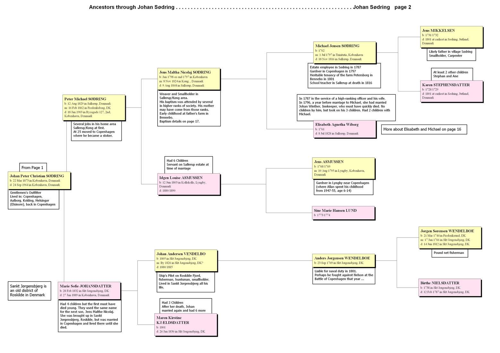

Ancestors of Johan Peter Christian S?dring:
Peter Michael S?dring Marie Sofie Johansdatter Jens Malthe
Nicolaj S?dring Idgen Louise Asmussen
Johan Andersen Vendelbo Maren Kirstine Kj?ldsdatter
Michael Jensen S?dring Elisabeth Agnetha Wiborg Jens
Asmussen Sine Marie Hansen Lund
Anders J?rgensen Wendelboe Jens Mikkelsen Karen
Stephensdatter J?rgen S?rensen Wendelboe Birthe
Nielsdatter
Index of All Ancestors

Michael
S?dring and Elisabeth Wiborg - the Story of the first
S?dring
Baptism of Jens Malthe Nicolaj S?dring
Any additional
information or comments, in Danish or in English, are most welcome; email
address below.
|